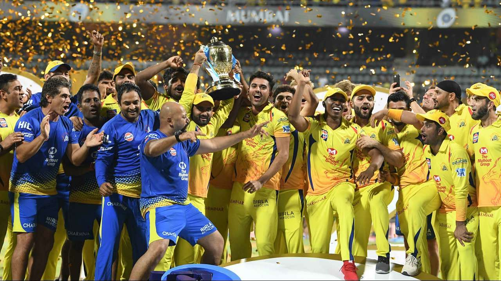

The Chennai Super Kings (CSK) are a franchise cricket team based in Chennai, Tamil Nadu. They play in the Indian Premier League (IPL). Founded in 2008, the team plays its home matches at the M. A. Chidambaram Stadium in Chennai. The team is owned by Chennai Super Kings Cricket Ltd and India Cements is the major stakeholder. The team served a two-year suspension from the IPL starting July 2015 due to the involvement of their owners in the 2013 IPL betting case,[2] and won the title in its comeback season of 2018. The team is captained by Mahendra Singh Dhoni and coached by Stephen Fleming. They are the current defending champions, having won the 2021 IPL season.
read more

Champions